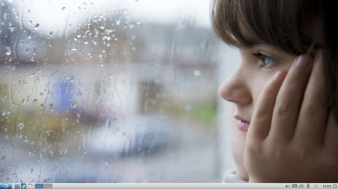

咱與 Lubuntu 的 700 日戰爭
就算回到復古的年代，也能展現青春洋溢。
對未來充滿著希望、對戀情懷抱著憧憬…許多事是不分世代的。
在古典味的 Linux Mint 與流行味的 elementary OS，我們看到 Linux 的未來，但是在民俗味的 Lubuntu 同樣也能注入對未來的希望與憧憬，寫下屬於自己的春春樂章。
重點不是你活在哪一年代，而是你願意投注青春，不虛擲光陰。
關於本文
本文描述的問題狀況，可能新版 Lubuntu 已經改善，但還是保留起來，解決類似問題時可以參考。若有些內容並未在您使用的 Lubuntu 發生，請自行跳過，不便之處尚請見諒。
目錄
．為什麼用 Lubuntu？
．該裝 32 位元還是 64 位元
．使用 Ubuntu 建議事項
．不知道怎麼切換到中文輸入法
．酷音輸入法選字欄位置錯誤
．改用其它輸入法平台
．無法用 Print Screen 抓螢幕畫面
．Windows 的微軟正黑體、標楷體、新細明體
．Firefox 是英文的
．取消 Firefox 視窗標題列
．在 Firefox 執行 Java Applet
．可以打電玩遊戲嗎？
．有類似 Visual Basic 的開發工具嗎？
．有 Notepad++ 文字編輯器嗎？
．字幕編輯軟體
．音樂格式轉換
．影片格式轉換
．聲波編輯軟體
．影片剪輯軟體
．螢幕截圖軟體
．螢幕錄影軟體
．有 CCleaner 嗎？
．如何將捷徑放在主選單裡面？
．nVidia GeForce 驅動程式
．Synaptics Touchpad
．開機時啟動電源管理員
．禁止久未動作時鎖屏或登出
．如何修改掛載的磁碟設定
．lost+found
．ZIP 解壓出來的檔名變亂碼
．啟用 root 帳戶
．取消自動登入
．HTTP Server
．FTP Server
．透過區網，在 Windows 下載 Linux 的檔案！
．如何關閉視窗環境系統
．清除 apt-get 殘留下來的套件
．多重開機的修改
．其它
為什麼用 Lubuntu？
Lubuntu 是使用 LXDE (Lightweight X11 Desktop Environment) 桌面環境的 Linux 作業系統，訴求被淘汰的舊電腦也能執行得很順暢，成為 Ubuntu 家族中最輕巧的發行版。
此外，LXDE 是由洪任諭先生（PCMan）與其他台灣知名開放原始碼貢獻人員所開發，因此使用 Lubuntu 對台灣人來說有沾台灣之光的榮耀與喜悅～
LXDE 另一個特點是套件的相依性很低，使得 Lubuntu 的桌面環境比其它 Ubuntu 版本還要耐折磨，經得起使用者的錯誤嘗試。
但 LXDE 的桌面環境無法像 KDE 或 GNOME 來得便利，它一切以簡單、實用為訴求，不太跟進時代的腳步加入新穎的操作方式。
如果電腦太舊，跑不動最新的作業系統，就適合使用 Lubuntu 讓你的老電腦回春。或者是平常熟於用 Shell 環境來調校系統，桌面只是用來輔助作業的資訊工程師，也適合選擇 Lubuntu 做為類似 Windows 2000 的網路管理作業系統。剛入門的 Linux 使用者，如果經常因為不熟悉，操作一下附屬應用程式來設定組態就把整個系統給搞死，也適合選用 Lubuntu 做為你第一個 Linux，降低改壞系統的情況。
但如果電腦配備不至於舊到被淘汰，且依賴更便利的桌面環境來操作各式應用軟體的話，Kubuntu 和 Linux Mint 會更順手。
該裝 32 位元還是 64 位元
如果你的處理器是 64 位元，而電腦幾乎用來上網、聽音樂、看影片而已，沒在安裝應用軟體讓電腦設計些什麼作品出來，那建議安裝 64 位元的作業系統，最能發揮硬體該有的執行效率！
處理器是 32 位元的話，或者希望電腦可以有更多用途，就安裝 32 位元的作業系統，因為在 Lubuntu 軟體中心會有較多的應用軟體可以安裝，例如電玩模擬器。
使用 Ubuntu 建議事項（僅供參考）
Ubuntu 是希望讓 Linux 也能成為家用作業系統所打造出來的桌面環境，因此使用上的思維應該有所改變，不要用 Slackware 或 Fedora Linux 的系統管理思維使用它。
Ubuntu 的桌面環境與 Linux 的系統狀態，經常是脫節開來、各自運作的～
盡量只從軟體中心安裝、移除軟體，在裡面找不到軟體的話乾脆不裝。
從應用軟體的官方網站下載來安裝的話，請先上網蒐集足夠的資料再進行，否則安裝失敗，又不知道怎麼移除的話，錯誤的組態可能一直殘留著，影響系統的穩固。
可以透過圖形化介面設置作業系統的話，就不要用終端機。
例如修改使用者密碼時，透過 Lubuntu 的「選單鈕」→「系統工具」→「使用者及群組」，會檢查密碼強度夠不夠才允許修改。假如你嫌這樣子不方便輸入，改用終端機下 passwd 設定簡單的密碼，那下次 Lubuntu 跳出圖形化介面要求輸入密碼時，照樣認為密碼強度不夠，根本沒檢查密碼就退回了～
所以直接透過終端機修改 Linux 系統組態，有時候是種暴力硬幹的行為，會造成 Ubuntu 桌面環境結構的破壞。
當然，這只是建議，如果你很熟悉 Shell 指令，那敲鍵盤往往比在圖型介面翻來覆去還要有效率～[1]
不知道怎麼切換到中文輸入法
Lubuntu 預設的 iBus 輸入法平台，使用與 Windows 8 一樣的組合鍵：
視窗鍵 + 空白鍵
不習慣的話，可以到「選單鈕」→「偏好設定」→「鍵盤輸入法」，將 <Super>Space 改為慣用的 <Ctrl>Space，就能按「Ctrl + 空白鍵」來切換中文輸入法。
酷音輸入法選字欄位置錯誤
剛安裝好的 Lubuntu 13.10 在 iBus 用酷音輸入法選字時，候選欄總是出現在視窗左下角，就算這次拉到覺得適合的地方，等下又自動跑回原處。
像我們使用網頁瀏覽器習慣把視窗開到最大，候選欄出現在視窗左下角的話，就超出桌面底端，根本看不到字。
移除 iBus 再重新安裝即可解決問題！進入「選單鈕」→「系統工具」→「Lubuntu 軟體中心」，在「已安裝的項目」搜尋 Keyboard input methods，移除後重新安裝，再登出與登入帳號，就可以正常選字了～
改用其它輸入法平台
gcin
由台灣 Edward Liu 設計的輸入法平台，因為貼近台灣在地習慣來改善設計，所以是最受台灣 Linux 注音使用者歡迎的輸入法！
然而，一些不符合開發者喜好的功能，就不會納入設計，例如用 Esc 鍵清除緩衝區輸入的文字、或者其他國家需要的功能，開發者覺得蠢或者無法理解就不會納入設計。
所以，雖然對台灣人來說是最棒的輸入法解決方案，卻未能受到全球 Linux 發行版的關注，反而 gcin 分歧出來的 HIME 能迎合大眾使用需求改善設計，漸漸受到 Linux 發行版的關注。
gcin 厲害的是也有 Windows 版，對需要 Linux 兩邊跑的人是不二選擇！
SCIM
被全球 Linux 發行版的開發團隊，視為有先天缺陷的輸入法平台，紛紛加以摒棄。
但長年發展的成果，其實有安裝容易、功能實用的優點，許多人在安裝其他輸入法平台覺得不盡理想後，還是裝回 SCIM。
fcitx
又稱小企鵝輸入法，可以自訂化的選項最多，能夠打造出外觀精美、又合乎自己習慣的輸入法。
iBus
最受全球 Linux 發行版歡迎的輸入法平台！
發行 Linux 作業系統的開發團隊，想要的是一體適用的輸入法平台，讓他們能夠更輕易將整合好的作業系統發行給全球用戶體驗。
各國在地化輸入法的功能夠不夠強悍，並不是他們關心的焦點[2]，能否確保各國使用者做基本的輸入才是重點。
所以，大多 Linux 發行版預裝 iBus 是合理的，覺得功能太陽春的人，再自行安裝各國口碑最好的輸入法平台來用，不失為未來 Linux 使用者的共識～
坦白說，很難建議哪一種最好，因為不同 Linux 發行版，跑起來完全正常的輸入法不一樣。例如 Linux Mint 跑 SCIM 沒有 Shift+Home 無法選字的問題，但 Lubuntu 卻有這樣的問題；而在 Lubuntu 跑 iBus 完全正常，在 Linux Mint 卻不靈光～
無法用 Print Screen 抓螢幕畫面
Lubuntu 並未預設 PrintScreen 鍵的程式動作，想抓螢幕畫面的話，請修改 /home/[使用者名稱]/.config/openbox/lubuntu-rc.xml，搜尋 <keybind key='Print'>，在 <command>lxsession-default screenshot</command> 下面一行，新增 <execute>scrot</execute> 這行描述即可。
重新登入後，按 Print Screen 鍵就會擷取螢幕畫面，儲存圖片在你的家目錄裡面！
scrot 是 Linux 用來截圖的工具，它有更多參數可以使用，例如指定存放圖檔的位置、調整圖片品質…，有興趣的人請自行搜尋資料。
Windows 的微軟正黑體、標楷體、新細明體
Linux 的中文字型不是缺字（AR PL UMing TW）、就是沒渲染很醜（Droid Sans Fallback），從 Windows 跨入 Linux 的人難免萌生安裝「新細明體」的想法。
這麼做不符合版權，但按捺不住時，請在 Windows 中到 C:\Windows\Fonts 複製你要的字型，例如微軟正黑體、標楷體、新細明體，會得到 kaiu.ttf、mingliu.ttc、msjh.ttc 三個檔案。
將這三個檔案放在 Lubuntu 的 /usr/share/fonts/truetype 裡面，即可使用微軟正黑體、標楷體、新細明體、細明體。
手上有原先買給 Windows 使用的字型，也可以這樣安裝到 Lubuntu。
Firefox 是英文的
這是 Lubuntu 13.10 才有的狀況。而且英文介面時，常常被誤認為是美國人，網頁不斷自動切換為英語系的頁面，相當不便。
依序點「選單鈕」→「系統工具」→「Lubuntu 軟體中心」，移除 Firefox 再重新安裝，就成為中文版了。
取消 Firefox 視窗標題列
這是 Lubuntu 設計上的問題，所以將 Firefox 的「選單列」關閉後，視窗的「標題列」還是留著，操作介面無法像 Windows 一樣簡潔。
個人覺得最棒的做法，是使用全螢幕模式，只要在 Firefox 按 F11 即可切換。用過平板電腦的人，應該都已經習慣並且喜歡這樣顯示方式！
不習慣全螢幕模式的話，請修改 /home/[user]/.config/openbox/lubuntu-rc.xml，在 </applications> 的前面一行，加入如下敘述：
<application role='browser'>
<decor>no</decor>
</application>
重新登入後，就類似 Windows 只剩 Firefox 橘色圖示，沒有標題列的簡潔介面了！
缺點是連放大、縮小、關閉視窗的小圖示也跟著沒了 Orz
在 Firefox 執行 Java Applet
在「選單鈕」→「系統工具」→「Lubuntu 軟體中心」搜尋 icedtea ，安裝「Icedtea java 外掛程式」即可。
可以打電玩遊戲嗎？
Linux 無法安裝 Windows 的遊戲，市面上也沒有 Linux 的電腦遊戲可以買來安裝，只好用模擬器玩一些 90 年代的遊戲。
MS-DOS 遊戲
在「選單鈕」→「系統工具」→「Lubuntu 軟體中心」，可以安裝 dosbox 玩 MS-DOS 的老遊戲。
dosbox-0.xx.conf 放在使用者家目錄的 .dosbox 裡面，這是隱藏資料夾，請按功能表的「檢視」→「顯示隱藏檔」。
至於怎麼設定組態，請自行搜尋資料來研究。先知道怎麼把 Lubuntu 存放遊戲的資料夾，掛載到 DOSBox 裡成 C 槽即可，因為這樣就能用 MS-DOS 指令執行遊戲。
Windows 遊戲
在「選單鈕」→「系統工具」→「Lubuntu 軟體中心」，可以安裝 wine 讓 Linux 執行 Windows 的程式：「包括遊戲！」
不過 Wine 並非 Windows 模擬器，而是讓 Linux 能夠執行 Windows 軟體的程式庫。雖然大多數程式都能執行，但不見得所有 Windows 遊戲都能玩。
電視遊樂器
底下是我推薦的模擬器清單：
| Nestopia | Family Computer | 可在 Lubuntu 軟體中心安裝。 |
| Fusion | Sega Mega Drive | 請到 https://www.eidolons-inn.net 下載。 |
| Snes9x | Super Famicom | 請到 https://packages.ubuntu.com 下載。 |
| VisualBoy | Game Boy | 可在 Lubuntu 軟體中心搜尋 game boy 找到。 |
| PCSX | PlayStation | 可在 Lubuntu 軟體中心安裝，但不含 BIOS。 |
或者也可以考慮用 Wine 來執行 Windows 版的模擬器。
雖然超任模擬器在 Lubuntu 軟體中心有 ZSNES，但顯示中文檔名都亂碼，所以還是推薦另外下載的 Snes9x。
PCSX 必須有 PlayStation 的 BIOS 韌體檔才能執行，請自行搜尋網路資源，這涉及 Sony 版權專利，不方便提供。
最後，通常模擬器都有 Video 和 Audio 的選項可以設置，如果畫面和音效有問題，不妨先改看看再說，別太早放棄～
遊戲修改大師
玩這些老遊戲，是不是手癢想用「遊戲修改大師」？請安裝相當於 Linux 版 Cheat Engine 的 GameConqueror 吧！
請開啟「選單鈕」→「附屬應用程式」→「LX 終端機」，輸入：
sudo apt-get install gameconqueror
安裝成功的話，即可在「選單鈕」→「遊戲」裡使用 Game Conqueror。
其實 Windows Vista 時代開始，單機電腦遊戲沒落到一年出沒幾款遊戲可買，為了玩最新電腦遊戲所以買 Windows 的時代已經過去。加上買最新的 Windows Vista/7/8 作業系統，很可能無法執行原本收藏的遊戲，對 PC Game 迷來說越來越沒有非灌 Windows 不可的動機與念頭～
我認為這是 Linux 發行版可以好好嘗試的領域！如果 Linux 反過來比 Windows Vista/7/8 更能相容 Windows 95/98/XP 遊戲的話，可以在每波換機潮提昇 PC 使用者嘗試 Linux 的意願。接著就是與 Android 較勁 HTML5 平台的遊戲，試圖讓 PC Game 的平台從 DirectX 轉移到 HTML5。當 Ubuntu 基於 HTML5 的新 PC Game 來得比 Windows 9 基於 DirectX 12 的遊戲還要多 20 倍，重現 1992~2002 年代 PC Game 的盛況，那雖然遊戲畫面完全無法相提並論，還是能以「量能」鼓動人心，就像人人爭睹社群遊戲的風采一樣。
畢竟很少人會為了一年只那麼一款 GTA4 或 TES5 水準的遊戲，去買 Windows 7 來安裝，因此 Windows 的購買動機將逐漸減低。而現在 HTML5 以 3D 繪圖製作出來的遊戲，畫面已經高於 PlayStation 2 的水準，正朝 PlayStation 3 的水準努力，所以不至於會抱歉到哪裡去，只要量多、帶動遊戲作品潮，還是能吸引人爭先恐後玩 Ubuntu 的 PC Game。
有類似 Visual Basic 的開發工具嗎？
個人推薦 NetBeans IDE，因為視覺化操作介面方便又順手，是最接近 Visual Basic 的。
請至 Oracle Technology Network for Java Developers 下載有捆綁 JDK 的 NetBeans，例如「JDK 7u45 with NetBeans 7.4」。記得根據你 Lubuntu 是 32 位元還是 64 位元選擇正確版本，否則下載回來的程式無法執行。
接著進入終端機模式執行下載回來的 *.sh 檔，會展開圖形化的安裝畫面，只要照著指示按下一步即可完成安裝。
安裝完成以後，可在桌面找到「NetBeans IDE 7.4」的捷徑，在「選單鈕」→「軟體開發」裡面也可以找到。
不過，每個人需要的開發工具不一樣，有些人需要 C++、有些人需要 Pythone、有些人需要 Dart，能拿來寫 Java、HTML、CSS、JavaScript 的 NetBeans IDE 只是目前最受用的語言。
想移除的話，請到 NetBeans IDE 所在目錄，執行 uninstall.sh。移除後，主選單的「軟體開發」如果還殘留捷徑，請到 /home/使用者帳戶/.local/share/applications 刪除。
有 Notepad++ 文字編輯器嗎？
如果你會設定 JRE 直接執行 Executable JAR、或者懂得自己下 Java 指令啟動 *.jar 檔的話，推薦文字編輯功能比 Notepad++ 還要強大的 jEdit！
不會的話，geany 是不錯的選擇，請至「選單鈕」→「系統工具」→「Lubuntu 軟體中心」安裝。缺點是文字編輯功能較差，例如不支援縱向選取功能，多行修改時不方便。但啟動快速，且中文相容性高。
字幕編輯軟體
請至 Aegisub 官網下載備存的 3.0.4 版 *.deb 包：
https://ftp.aegisub.org/pub/releases/
看要 aegisub_3.0.4-1_i386.deb 還是 aegisub_3.0.4-1_amd64.deb，下載後用滑鼠點兩下就能安裝。
不建議安裝「Lubuntu 軟體中心」裡面的 aegisub，版本較舊，而且有 bug，常常無法敲中文。
音樂格式轉換
請在「選單鈕」→「系統工具」→「Lubuntu 軟體中心」安裝「音效轉檔器」。
影片格式轉換
請在「選單鈕」→「系統工具」→「Lubuntu 軟體中心」安裝 winff。
其實 WinFF 是萬用轉碼器，可以轉音樂格式。但速度超級慢，想轉音樂的話還是用「音效轉檔器」比較好～
聲波編輯軟體
請在「選單鈕」→「系統工具」→「Lubuntu 軟體中心」安裝 audacity。
影片剪輯軟體
請在「選單鈕」→「系統工具」→「Lubuntu 軟體中心」安裝 openshot。
螢幕截圖軟體
請在「選單鈕」→「系統工具」→「Lubuntu 軟體中心」安裝 shutter。
螢幕錄影軟體
請在「選單鈕」→「系統工具」→「Lubuntu 軟體中心」安裝 guvcview。
有 CCleaner 嗎？
請在「選單鈕」→「系統工具」→「Lubuntu 軟體中心」安裝 BleachBit。
如何將捷徑放在主選單裡面？
Lubuntu 對主選單捷徑的設計方式，跟 Windows 開始選單很不一樣，所以這問題改成「如何讓捷徑出現在主選單裡面」會比較容易回答。
首先，勾選功能表「檢視」裡面的「顯示隱藏檔」，進入 /home/[使用者名稱]/.local/share/applications 資料夾（沒有 applications 請自行建立），然後用滑鼠右鍵選單建立新的捷徑。
接著會跳出對話視窗要求「為新建檔案輸入名稱」，這時注意！必須在名稱後面加上副檔名 .desktop 才行，接下來照圖型化界面的指示設定「名稱」「指令」「工具提示」「圖示」來產生捷徑。
完成後，用 Leafpad 打開這個捷徑，在最後一行加入：
Categories=
等號後面依照你想分類的目錄，參考如下清單來做輸入…
| Video | 影音 | |
| Education | 教育 | |
| Network | 網際網路 | |
| Graphics | 美工繪圖 | |
| Development | 軟體開發 | |
| Game | 遊戲 | |
| Office | 辦公 | |
| Utility | 附屬應用程式 | |
| Settings | 偏好設定 | |
| System | 系統工具 |
這樣就能在選單鈕的分類清單看到捷徑了～
另外，Lubuntu 所有選單的捷徑，都是放在 /usr/share/applications 裡面，希望新增所有使用者都能使用的捷徑，就放在這裡。
nVidia GeForce 驅動程式
nVidia 網站有提供 Linux 作業系統的驅動程式，但是要關閉 XServer、或者使用 root 帳戶…之類的，不容易安裝。
幸好在 Lubuntu 可透過下列操作直接更換：「選單鈕」→「偏好設定」→「軟體和更新」→切換頁籤到「額外驅動程式」→將獨立顯示卡改圈選「專有，已通過測試」→按「套用變更」即可自動更換驅動程式。
重新開機後，還可以在「選單鈕」→「系統工具」找到「NVIDIA X Server Settings」，有豐富的選項能夠設置你的顯示卡；例如將 PowerMizer 的 Preferred Mode 設為 Adaptive。
如果電腦無法有效用 HDMI 連接電視，或者覺得筆電太耗能，可以考慮改裝 nVidia GeForce 驅動程式看看。
注意！nVidia 驅動程式會改變 X 環境開機的設定，例如登入前跳出 nVidia 的商標圖。
不想再用 nVidia 驅動程式的話，重新安裝開放原始碼組織的顯示卡驅動程式即可，然後執行 apt-get autoremove 和 apt-get autoclean 將 nVidia 驅動程式改變 X 環境開機的設定還原。
Synaptics Touchpad
如果你跟我一樣，不喜歡觸控板有感應滑鼠左鍵的功能，覺得觸控板單純用來移動滑鼠游標就好，請參考如下做法。
首先，透過「LX 終端機」用 Lubuntu 內建的純文字編輯器 leafpad 開啟使用者帳戶的 profile 檔：
leafpad .profile
然後找個適當的位置，寫入如下設定：
xinput set-prop 'SynPS/2 Synaptics TouchPad' 'Synaptics Tap Time' 0
重新登入後，Synaptics Touchpad 的觸控板就不會感應「按一下」「按兩下」「按三下」這三個動作，只能用來移動滑鼠游標了～
注意！寫在 .bashrc 是沒用的！因為那是在 shell 環境下才有效，而 LXDE 的桌面環境與終端機模式並不緊密相依，所以會發現登入後並未有效執行該敘述，必須先執行過 LX 終端機，.bashrc 寫入的敘述才會生效。
兩指捲動與縮放功能也不要的話…
xinput set-prop 'SynPS/2 Synaptics TouchPad' 'Synaptics Two-Finger Scrolling' 0 0
開機時啟動電源管理員
想在 Lubuntu 13.10 預設使用「電源管理員」的話，請在「選單鈕」→「偏好設定」→「Default applications for LXSession」中，將 Power Manager 的 Command 調為「Other」，並在輸入欄寫上「xfce4-power-manager」，這樣每次開機就會自動執行電源管理員。Lubuntu 14.04 則是在 Autostart 用勾選的。
禁止久未動作時鎖屏或登出
如果在「電源管理員」調整「關閉顯示器」為「用不」，卻還是照樣時間一到就鎖屏跳到登入畫面或者螢幕變黑，那是「螢幕保護程式」造成的。
請到「選單鈕」→「偏好設定」→「Light Locker Settings」，把看到的項目通通關掉吧！
如何修改掛載的磁碟設定
Lubuntu 的「選單鈕」→「偏好設定」→「磁碟」可以很簡單重新規劃磁碟分割與掛載，但有個缺點，設定新掛載行為時，居然不會將舊的設定給移除，而是直接追加新增的動作進入，導致開機時重複掛載一連串的動作。
這時請修改 /etc/fstab 裡面的設定，自行研判不需要的掛載設定是哪些，然後移除。
lost+found
如果額外掛載的磁碟裝置，總有個刪不掉也隱藏不了的 lost+found 資料夾，覺得礙眼的話，就改用 ntfs 格式吧！因為那是 ext3 和 ext4 必然產生的資料。
要這麼做時，記得先把檔案放到其它分割區，不然格式化後就沒了～
ZIP 解壓出來的檔名變亂碼
在 Windows 作業系統用 ZIP 壓縮的檔案，拿到 Lubuntu 解開，檔名變成亂碼～
這是因為 Linux 的檔案系統已經採用 Unicode 編碼，但 Windows 繼續使用 Big5 這類在地編碼。而 ZIP 壓縮時不含編碼資訊，解壓時只好以各個作業系統預設的編碼方式來處理檔名。因此 Linux 在解壓轉換過程把 Big5 當 Unicode 解讀，就變成亂碼了。
解決辦法就是改用命令列下 unzip 指令來解壓，搭配 -O Big5 參數即可，例如：
unzip -O Big5 /home/twideem/桌面/archive.zip
啟用 root 帳戶
「選單鈕」→「附屬應用程式」→「LX 終端機」→輸入「sudo -i」，就能進入 root 帳戶，然後用 passwd 指令更改密碼，便能在登入畫面選 Other 以 root 的帳密來登入！
雖然 root 很方便，但平常還是用使用者帳戶操作 Lubuntu 比較好。[3]
取消自動登入
對喜歡改系統組態的人來說，自動登入蠻危險的，因為改錯導致登入就當的話，自動登入等於開機必當 XDDD
想取消自動登入，請按「選單鈕」→「附屬應用程式」→「LX 終端機」→輸入「sudo leafpad /etc/lxdm/default.conf」，用 # 將「autologin=使用者名稱」這行給註解掉。
接著輸入「sudo leafpad /etc/lightdm/lightdm.conf」，用 # 將「autologin-user=使用者名稱」與「autologin-user-timeout=0」這兩行給註解掉。
最後，在「選單鈕」→「系統工具」→「使用者群組」中，將使用者帳號的密碼改為「登入時詢問」。
重新開機，就會看畫面停留在要求輸入使用者密碼的介面。
HTTP Server
Step 1: 安裝 Apache HTTP Server
「選單鈕」→「附屬應用程式」→「LX 終端機」→輸入「sudo apt-get install apache2」。
安裝完，作業系統會自動執行程序，無須啟動 Apache HTTP Server。
Step 2: 放上網頁
使用 sudo 權限，將寫好的網頁放在 /var/www/html/ 裡面。
注意！不要為了方便，把 /var/www/ 權限降低為使用者都能讀寫！
Step 3: 設定 Apache HTTP Server 參數
「選單鈕」→「附屬應用程式」→「LX 終端機」→輸入「sudo leafpad /etc/apache2/apache2.conf」，來設定 HTTP Server 的參數。
為防止駭客輕易登入你的網頁伺服器，這部份不能兒戲，請另外上網搜尋更詳細資料，認真研究該如何設定參數。
Step 4: 查詢這台電腦的 IP
「選單鈕」→「附屬應用程式」→「LX 終端機」→輸入「ifconfig」，查詢連線到網際網路的裝置，是什麼 inet addr。（這裡假設查到的情況是 192.168.1.1）
Step 5: 連線到你的 HTTP Server
開啟網頁瀏覽器，在網址列輸入「192.168.1.1」，就能看到你伺服器的網頁。
理論上無論哪一台電腦，只要開啟網頁瀏覽器輸入你電腦的網址，都能連線。但這裡牽涉到「網路供應商分派的 IP」與「你網路分享器配給的 IP」議題。
如果你給的網址是網路供應商分派的 IP，那全球使用網際網路都能連到你的 HTTP Server 看網頁，如果你給的網址是分享器配給的，那只有家裡同一台分享器的人可以連線。
要架全球資訊網的話，請向你的網路供應商申請固定 IP，不然每次網路供應商分派的 IP 都不一樣。
FTP Server
在「選單鈕」→「系統工具」→「Lubuntu 軟體中心」，可以安裝 pureadmin。它提供 pure-ftpd 這款 FTP Server，並且可在「開始選單鈕」→「系統工具」→「PureAdmin」啟動圖形化介面，透過它能設置 FTP 組態，以及開啟與關閉 FTP Server。
要注意的是，安裝完後會自動執行，而且是每次開機就自動執行。如果你只是偶爾當作兩台電腦之間傳檔用而已，不打算開整天 FTP 伺服器，要記得關掉它。
透過區網，在 Windows 下載 Linux 的檔案！
假設要開放下載 Linux 裡 /home/twideem/share 目錄裡面的檔案，其中 twideem 是我登入 Linux 的使用者帳號…
事前準備
建議先進入網路分享器的設定介面，確認是否允許區網之間的電腦互相通訊？是否允許存取伺服器埠？否則白搭。
這部份每家廠牌的操作介面不一樣，請自行研究～
Step 1: 安裝 Samba
在終端機模式輸入 sudo apt-get install samba 安裝 Samba。
Step 2: 設定帳號密碼
在終端機模式輸入：
smbpasswd -a twideem
接著依指示設定密碼，就能將 Lubuntu 使用者帳戶 twideem 設為 Samba 使用者帳戶。
Step 3: 設置要分享的目錄
接著編輯 /etc/samba/smb.conf 檔案，在最底下輸入：
[twideem]
path = /home/twideem/share
browseable = yes
read only = yes
如果希望 Windows 可以更動 Linux 目錄裡面的檔案，可加入 writable = yes 這行設定。
然後在終端機模式輸入 /etc/rc.d/init.d/smb restart 重新啟動 Samba。
Step 4: 登入 Samba
這樣就能在 Windows 的「網路芳鄰」或「共用網路」找到名為 twideem 的項目，點下去輸入帳號密碼，即可下載 Lubuntu 裡 /home/twideem/share 的檔案。
如何關閉視窗環境系統
請從 Ctrl+Alt+F2 到 Ctrl+Alt+F6 中挑一個進入純指令模式的終端操作環境（Ctrl+Alt+F7 是 X 視窗作業環境），登入使用者帳戶後，輸入如下指令即可關閉整個視窗作業環境：
sudo service lightdm stop
要恢復開啟的話：
sudo service lightdm start
之後如果回到下達指令的終端環境，發現正在執行程序，可按 Ctrl+C 中止，不過連同啟動的視窗環境也會一併中止。
覺得視窗系統有問題時，登出帳戶再登入卻不見改善，但又不想重新開機時，就「重新啟動」視窗系統：
sudo service lightdm restart
清除 apt-get 殘留下來的套件（慎用）
在移除 Ubuntu 套件後，常常會殘留在一些無用的套件，可以輸入 sudo apt-get autoremove 來移除。
但是建議先做好系統備份、並且詳細紀錄 apt-get 說要移除的套件是哪些，以免造成軟體功能異常後救不回來。
另外還有一個是 sudo apt-get autoclean，用來清理軟體留下的組態或檔案，這倒是可以放心的使用。
多重開機的修改
先用 leafpad /etc/default/grub 修改多重開機的預設作業系統和讀秒時間，然後執行 update-grub，再用 leafpad /boot/grub/grub.cfg 刪除選單的項目或修改項目的名稱。
其它「我」尚未解決的問題
１、經常無法在「檔案管理程式」完成 Ctrl+X 與 Ctrl+V 的操作，只能用滑鼠右鍵選單來「貼上」。（不曉得是 PCManFM 本身的問題，還是裝了什麼軟體系統導致快捷鍵失效？）
２、SCIM 的新酷音輸入法，無法按 Shift+Home 或 Shift+End 來選取文字，或者在有些軟體按 Backspace 鍵時變成將該鍵值輸出成字元，而不是進行前刪除的動作。（懶得解決，換其它輸入系統比較快。）
３、筆電風扇狂轉，越用越覺得吵。（耗能問題是 Linux 的致命傷，似乎只知道電力全開。如果安裝了 nVidia 驅動程式，卻看不到 NVIDIA X Server Settings 裡面有可以調風扇轉速的介面，搞下來就有得折騰了！一個不錯的解決辦法是，邊吹電扇、邊把風扇的聲音給蓋過去 XDDD）
使用心得分享
個人覺得適合 Lubuntu 13.10 配色的桌布

可至 Wallpaperpin 網站下載：
https://thewallpaper.co/sad-girl-in-rain-high-definition-desktop-wallpaper-background-photos-free-colors-artworks-display-1600x1067/
終端機預設字型
終端機模式的預設字型，應該用等寬字體且不加裝飾才適合，否則容易看錯指令。
點功能表的「編輯」→「偏好設定」，改用「文泉驛等寬微米黑」。
不用捨不得刪除 Lubuntu 預設的軟體
Lubuntu 選用的軟體都是「輕快、小巧」取勝，最明顯的例子，就是內建的文字編輯器為 Leafpad 而不是 gedit。既然知道 Lubuntu 預裝的都是最陽春的軟體，就放手安裝真正適合自己的應用軟體取而代之。
Lubuntu 第一個長期支援版 14.04
Ubuntu 每逢 4 月與 10 月會釋出一次新版本，你必須升級或重灌新版的 Ubuntu，否則九個月的技術支援期限過後，將無法更新系統漏洞。
為了避免頻繁升級或重灌，Ubuntu 10.04 起推出 LTS (Long Term Support) 長期支援版！每兩年釋出一次 LTS 版，並提供長達五年的技術支援。
Lubuntu 的第一個 LTS 是 14.04。
Lubuntu 18.10 再進化！
新一代 LXDE：LXQt
因為 The LXDE Team 不滿意 GTK+3，所以重新設計基於 Qt5 的 LXQt，取代基於 GTK+2 的 LXDE。
雖然 LXQt 比 LXDE 占用資源，但 GTK+2 將成為落後時代的技術，未來 Lubuntu 還是會使用 LXQt 桌面環境。
經過四年的開發、測試、調校、整合，Lubuntu 18.10 正式從 LXDE 轉為 LXQt！
Lubuntu 進化後，桌面環境將更容易開發與維護，打造出更有工作效率的作業系統。但有點像進化後等級從 1 開始練起的遺憾，一開始會有不少系統錯誤和程式相容的問題，可能沒有進化前卻等級 99 的 Lubuntu 耐打耐操～
升級建議
若電腦像平板那樣用途，單純執行應用軟體：上上網、看看片、聽聽歌，用沒一小時就收起來，才鼓勵你使用 Lubuntu 18.10，將錯誤或建議回饋給開發團隊改進。
若電腦是長時間工作用途，建議停留在 Lubuntu 18.04，等穩定性和相容性都令人滿意了，再考慮升級。
由於 Lubuntu 發展至今，不如其它輕量級 Linux 發行版受歡迎，變成冷門作業系統，恐怕要等個兩年才能趕上。
至於為何不受歡迎？Lubuntu 雖然最耐操、相容性又好、系統需求也低到跟 20 年前的 Windows XP 差不多，但大家比較喜歡檔案小、桌面絢麗、聲光效果好、可攜性高的 Linux 發行版，對樸實無華、活像文書專用電腦在裝載的 Lubuntu 看不上眼。然而，一天八小時開著電腦寫程式、打報告的話，穩定、耐操、迅速、便利的 Lubuntu，才是輕量級 Linux 發行版中最好的選擇！
其它
．Linux = 穩定 ???
．家用電腦的時代看 Linux
．何以為 Linux 痴狂
．推廣 Linux 二三事
．我的 Linux 歷程
．Linux Mint 的崛起
．裝在 USB 隨身碟使用的 Linux 作業系統
．可切換各種作業系統桌面風格的 Linux 發行版
．終於被 Linux 幹掉的 Windows 10（我的 Linux 發行版 TOP 5）
．Linux 發行版與 Windows 8 作業系統裝在一起的問題
．我愛小企鵝輸入法